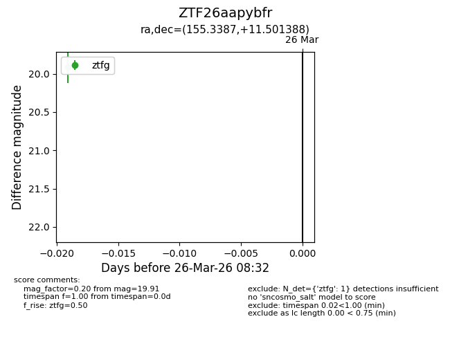
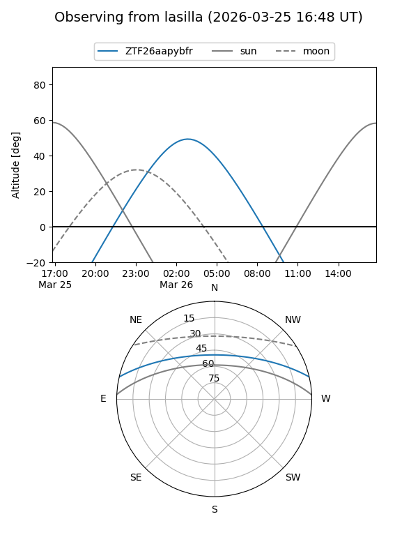
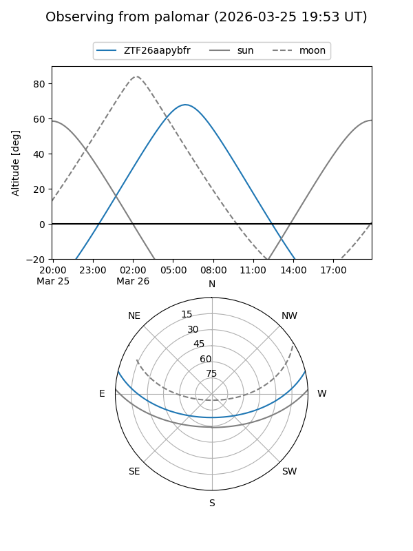

ZTF26aapybfr
Target ZTF26aapybfr at 2026-03-26 08:34
Aliases and brokers:
FINK: link
Lasair: link
ALeRCE: link
alt names
ZTF26aapybfr (ztf,fink_ztf)
Coordinates:
equatorial (ra, dec) = 155.3387,+11.50139
equatorial (HMS+DMS) = 10:21:21.30,+11:30:05.00
galactic (l, b) = (229.4453,+51.50146)
Flags:
Photometry:
last ztfg=19.91
1 ztfg detections
Lightcurve

Visibility


Additional plots